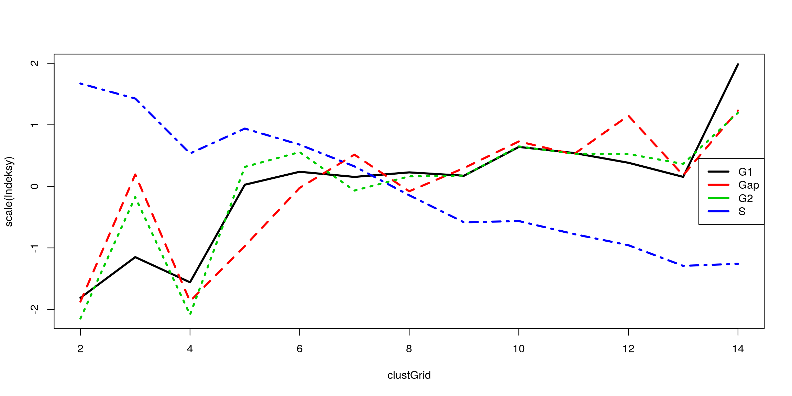
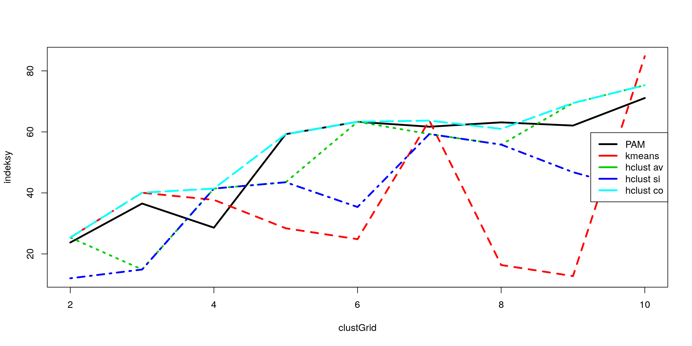

Rozdział 3 Analiza skupień
Analiza skupień to zbiór metod pozwalających na wyróżnienie zbiorów obserwacji
(nazywanych skupieniami lub klastrami) podobnych do siebie. Proces szukania podziału na grupy, nazywany jest czasem klastrowaniem. W pakiecie R dostępnych
jest bardzo wiele metod do przeprowadzania analizy skupień. Poniżej omówimy jedynie kilka wybranych funkcji z pakietów cluster i stats. Osoby zainteresowane
tym tematem powinny przyjrzeć się również funkcjom z pakietów flexclust oraz
mclust02.
Wyniki działania wybranych procedur analizy skupień przedstawimy ma przykładzie zbioru danych benchmarkowych. W pakiecie mlbench (skrót od Machine
Learning Benchmark Problems) umieszczonych jest wiele ciekawych zbiorów danych
wykorzystywanych do testowania właściwości algorytmów dyskryminacji lub analizy skupień. W tym pakiecie znajdują się zbiory rzeczywistych danych, jak również
funkcje do generowania zbiorów danych o określonych kształtach lub właściwościach.
Dwa zbiory wygenerowanych danych na których będziemy testować metody analizy skupień przedstawione są na rysunku 3.1. Zostały one wygenerowane funkcjami
mlbench.cassini(mlbench) i mlbench.2dnormals(mlbench).
Do wyznaczania skupisk wystarczy macierz odległości pomiędzy obiektami. Domyślnie wyznaczane są odległości euklidesowe (może więc warto skalować dane?)
ale można te odległości liczyć korzystając z innych funkcji dist.BC(clusterSim),
dist.GDM(clusterSim), dist.SM(clusterSim), dist(stats), dist.binary(ade4).
3.1 Metoda k-średnich
Celem tej metody jest podział zbioru danych na k klastrów. Dobry podział to taki,
w którym suma odległości obserwacji należących do klastra jest znacznie mniejsza
od sumie odległości obserwacji pomiędzy klastrami. Metoda k-średnich polega na
wyznaczeniu współrzędnych k punktów, które zostaną uznane za środki klastrów.
Obserwacja będzie należała do tego klastra, którego środek jest najbliżej niej.
Metoda k-średnich jest zaimplementowana w funkcji kmeans(stats). Pierwszym
argumentem tej funkcji jest ramka danych określająca wartości zmiennych dla kolejnych obserwacji. Drugim argumentem może być pojedyncza liczba określająca ile
klastrów chcemy identyfikować (w tym przypadku środki klastrów będą wyznaczone
iteracyjnym algorytmem) lub wektor środków klastrów. Algorytm wyboru środków
klastrów jest algorytmem zrandomizowanym, może też dawać różne wyniki nawet
na tym samym zbiorze danych! Dlatego też zalecane jest uruchomienie kilkukrotne
tego algorytmu oraz wybranie najlepsze go podziału na klastry. Można to zrobić też
automatycznie, określając argument nstart funkcji kmeans().
Algorytm k-średnich minimalizuje \(tr(W)\) gdzie \(W\) to macierz kowariancji wewnątrz klas. Opisuje go poniższa sekwencja
wybierany jest wstępny podział (w razie potrzeby można ten wybór powtórzyć wielokrotnie by znaleźć globalne maksimum),
przypisuje się obiekty do klasy z najbliższym środkiem ciężkości
przelicza się środki ciężkości dla nowych klas
kroki 2-3 powtarza się tak długo aż nie będą zachodziły żadne zmiany.

Rysunek 3.1: Dane, na których będziemy przedstawiać metody analizy skupień.
Poniżej prezentujemy przykład użycia funkcji kmeans(). Wyniki analizy skupień
przedstawione są graficznie na rysunku 3.2. Różne klastry zaznaczono punktami
o różnych kształtach. Czarne pełne punkty wskazują na środki znalezionych klastrów. Oczywiście właściwszym byłoby dopasowanie do lewego przykładu 3 klastrów, a do prawego 5 klastrów. Na przedstawionych przykładach możemy prześledzić ci się dzieje, jeżeli źle określimy liczbę klastrów (czytelnik powinien spróbować powtórzyć te analizy, wyniki najprawdopodobniej otrzyma inne!).
# szukamy 5 klastrow, nie trafiło się nam najlepsze dopasowanie
> klaster = kmeans(zbiorPerla,5)
# jak wygląda wynik w środku?
# pole $cluster określa numer klastra dla kolejnych punktów, $centers
# określa współrzędne środków klastrów
> str(klaster)
List of 4
$ cluster : int [1:1000] 3 3 3 3 3 3 3 3 3 3 ...
$ centers : num [1:5, 1:2] 0.03203 -0.00749 -0.08380 -0.81601 0.91808
...
..- attr(*, "dimnames")=List of 2
.. ..$ : chr [1:5] "1" "2" "3" "4" ...
.. ..$ : NULL
$ withinss: num [1:5] 22.4 10.9 126.9 11.5
9.8
$ size
: int [1:5] 103 69 197 70 61
- attr(*, "class")= chr "kmeans"
# rysujemy punkty, różne klastry oznaczamy innymi kształtami punktów
> plot(zbiorPerla, pch=klaster$cluster)
# dorysujmy środki klastrów
> points(klaster$centers, cex=2, pch=19)
> klaster = kmeans(zbiorGwiazda,2)
> plot(zbiorGwiazda, pch=klaster$cluster)
> points(klaster$centers, cex=2, pch=19)kmeans(). Pole $cluster określa do jakiego klastra została przyporządkowana dana obserwacja, a pole $centers to współrzędne środków poszczególnych klastrów.

Rysunek 3.2: Graficzna prezentacja działania funkcji kmeans().
3.2 Metoda grupowania wokół centroidów (PAM, ang. Partitioning Around Medoids)
Metoda PAM działa na podobnej zasadzie jak k-średnich, z tą różnicą, że środkami klastrów są obserwacje ze zbioru danych (nazywane centroidami lub centrami klastrów). W metodzie PAM zbiór możliwych środków klastrów jest więc znacznie mniejszy, niż w metodzie k-średnich, zazwyczaj też wyniki działania metody PAM są stabilniejsze. Na rysunku 3.3 przedstawiony jest wynik działania poniższego przykładowego wywołania tej funkcji. Podobnie jak poprzednio różne klastry zaznaczono punktami o różnych kształtach. Czarne pełne punkty to środki klastrów (w tej metodzie odpowiadają przypadkom ze zbioru danych).
# ponownie szukamy 5 klastrow
> klaster = pam(zbiorPerla,5)
> # jak wygląda wynik w środku?
# pole $medoids określa współrzędne środków klastrów (wybranych
# przypadków), $in.med określa indeksy obserwacji, które są środkami
# klastrów, $clustering to wektor indeksów kolejnych klastrów, $silinfo
# to informacje o dopasowaniu danego obiektu do klastra w którym się
# znajduje (wartość silhouette)
> str(klaster)
List of 10
$ medoids
: num [1:5, 1:2] 6.47e-01 -6.26e-01 -6.38e-01 5.87e-01
1.59e-05 ...
$ id.med
: int [1:5] 24 126 230 267 464
$ clustering: int [1:1000] 1 1 2 1 1 2 1 1 1 2 ...
$ objective : Named num [1:2] 0.526 0.461
..- attr(*, "names")= chr [1:2] "build" "swap"
$ isolation : Factor w/ 3 levels "no","L","L*": 1 1 1 1 1
..- attr(*, "names")= chr [1:5] "1" "2" "3" "4" ...
$ clusinfo : num [1:5, 1:5] 87 113 101 99 100 ...
..- attr(*, "dimnames")=List of 2
.. ..$ : NULL
.. ..$ : chr [1:5] "size" "max_diss" "av_diss" "diameter" ...
$ silinfo
:List of 3
..$ widths
: num [1:1000, 1:3] 1 1 1 1 1 1 1 1 1 1 ...
.. ..- attr(*, "dimnames")=List of 2
.. .. ..$ : chr [1:500] "12" "96" "133" "155" ...
.. .. ..$ : chr [1:3] "cluster" "neighbor" "sil_width"
..$ clus.avg.widths: num [1:5] 0.434 0.440 0.482 0.443 0.508
..$ avg.width
: num 0.462
$ diss
: NULL
$ call
: language pam(x = zb1$x, k = 5)
$ data
: num [1:1000, 1:2] 0.0964 0.6938 -0.5325 1.2839 0.1743
...
- attr(*, "class")= chr [1:2] "pam" "partition"
> # rysujemy punkty, różne klastry oznaczamy innymi kształtami punktów
> plot(zbiorPerla, pch=klaster$clustering)
> # dorysujmy środki klastrów
> points(klaster$meoids, cex=2, pch=19)pam() ma sporo pól, najistotniejsze to $medoids
ze współrzędnymi medoidów, $id.med z indeksami medoidów i $clustering z indeksami klastrów, do których zostały przypisane kolejne obserwacje.

Rysunek 3.3: Graficzna prezentacja działania funkcji pam().
Metoda PAM jest obliczeniowo złożona. Może być niemożliwym obliczeniowo
wykonanie jej na dużym zbiorze danych. Do klastrowania dużych zbiorów polecana jest metoda clara (Clustering Large Applications) zaimplementowana w funkcji
clara(cluster). Wykonuje ona wielokrotnie metodę PAM na mniejszych zbiorach
danych i scala wyniki w jeden podział na klastry.
Algorytm PAM (k-medoidów) opisuje następująca sekwencja
wybiera się początkowy zbiór medoidów,
przepisuje się obiekty do klas o najbliższym medoidzie,
zmienia się medoidy o ile jest taka potrzeba, w takiej sytuacji wraca się do kroku 2.
Minimalizowana jest \(\sum_{r=1}^{u}d(r)\), gdzie \(d(r)\) to najmniejsza z sum odległości jednego punktu z klasy \(r\) do wszystkich pozostałych punktów z tej klasy.
3.3 Metoda aglomeracyjnego klastrowania hierarchicznego
Klastrowanie hierarchiczne różni się od przedstawionych powyżej metod tym, że zamiast dzielić obserwacje na określoną liczbę klastrów, określa się stopień podobieństwa poszczególnych obiektów i wyznacza się drzewo odpowiadające tym podobieństwom. Do budowy takich drzew wykorzystywane są różne algorytmy.
Algorytm AGglomerative NESting (AGNES) jest metodą aglomeracyjną, co oznacza, że w pierwszym kroku każda obserwacja traktowana jest jak osobny klaster.
W kolejnych krokach klastry najbardziej podobne do siebie są łączone w coraz większe klastry, tak długo aż nie powstanie tylko jeden klaster. Algorytm aglomeracyjnego klastrowania hierarchicznego jest dostępny w funkcji agnes(cluster). Pierwszym argumentem może być macierz danych (podobnie jak w przypadku innych algorytmów klastrowania) określająca współrzędne poszczególnych obserwacji lub też
macierz odległości pomiędzy obserwacjami, a więc obiekt klasy dist (jak tworzyć
takie obiekty pisaliśmy w poprzednim podrozdziale). Duże znaczenie ma metoda
liczenia odległości pomiędzy obserwacjami. Z reguły zmiana metody liczenia odległości (np. z euklidesowej na taksówkową) prowadzi do otrzymania zupełnie innego wyniku.
Algorytm grupowania hierarchicznego można opisać następująco:
Każdą obserwacje traktujemy jako osobne skupienie.
Znajdujemy dwa skupiska najbliższe sobie. Odległość pomiędzy skupiskami można wyznaczać na różne sposoby. Trzy najpopularniejsze opisane są poniżej.
Łączymy dwa najbliższe skupiska w jedno.
Jeżeli pozostało więcej niż jedno skupisko to wracamy do kroku 2.
Kolejnym istotnym argumentem jest argument method. Określa on kolejność łączenia małych klastrów w coraz większe klastry. W każdym kroku łączone są najbliższe klastry, ale odległość pomiędzy dwoma klasterami można liczyć na trzy sposoby:
method="single", liczona jest odległość pomiędzy najbliższymi punktami każdego z klastrów, do jednego klastra dołączany jest klaster którego dowolny element jest najbliżej. Ta metoda odpowiada zachłannemu dodawania do skupiska obiektów bliskich brzegowi skupiska, możliwe jest tworzenie się tzw. łańcuchów kolejno dołączanych obiektów, być może już nie tak podobnych do całego skupiska, coś w stylu „przyjaciele naszych przyjaciół są naszymi przyjaciółmi”,method="average", liczona jest średnia odległość pomiędzy punktami każdego z klastrów, łączone są więc klastry średnio podobnych obserwacji, to jedna z popularniejszych metod ([unweighted pair-]group average method, UPGMA),method="complete", liczona jest odległość pomiędzy najdalszymi punktami każdego z klastrów, jeżeli dwa skupiska są w odległości \(d\) oznacza to, że że każda para punktów w tych skupiskach jest nie bardziej odległa niż \(d\).method="ward"skupiska o minimalnej wariancji, w wyniku otrzymuje się zwarte skupiska.method="flexible", elastyczność tej metody polega na możliwości określenia jak liczona ma być odległość pomiędzy łączonymi klastrami. Tą odległość sparametryzowano czterema współczynnikami (więcej informacji znaleźć można w Kaufman i Rousseeuw (1990), p.237 lub w opisie funkcjiagnes()). Korzystanie z tej opcji polecane jest bardziej doświadczonym użytkownikom, działa zasada: nie wiesz jak to działa nie używaj.method="weighted"odpowiada metodzie elastyczne z parametrempar.method = 0.5.
Dla funkcji
agnes()domyślnie stosowana jest metodaaverage, a dla funkcjihclust()domyślnie stosowana jestcomplete. Funkcjaagnes()w porównaniu do innych implementacji ma dwie dodatkowe cechy: wyznacza “agglomerative coefficient” i umożliwia rysowanie “banner.plot”."
Użycie każdej z tych metod prowadzi do wygenerowania innego drzewa. Wyniki dla każdej z tych trzech wymienionych metod łączenia klastrów oraz dla obu zbiorów danych przedstawiamy na rysunku 3.4. Na tym rysunku przedstawione są wyniki analizy skupień dla 1000 obiektów, jeżeli analizujemy mniejszą liczbę obiektów, to na osi poziomej można odczytać nazwy poszczególnych obiektów a tym samym wizualizować, które obiekty są do siebie bardziej, a które mniej podobne (przykład takiego drzewa przedstawiliśmy na rysunku 3.5).
Wracając do rysunku 3.4 w przypadku zbioru Gwiazda sensowniejsze wyniki
otrzymuje się dla metod łączenia average i complete (na drzewie można wydzielić
5 podgałęzi odpowiadającym spodziewanym skupiskom). Dla zbioru Perła najlepiej
radzi sobie metoda łączenia single wyodrębniająca dosyć szybko trzy rozłączne
skupiska. Najczęściej wykorzystywaną metodą łączenia jest average, nie oznacza to że zawsze daje najlepsze wyniki.
Aby na podstawie hierarchicznego klastrowania przypisać obserwacje do określonej liczby klastrów należy drzewo przyciąć na pewnej wysokości. Do przycinania
drzewa służy funkcja cutree(stats), jej pierwszym argumentem jest obiekt będący
wynikiem metody hierarchicznej. Kolejnym argumentem, który należy wskazać jest
k (określa do ilu klastrów chcemy przyciąć drzewo) lub h (określa na jakiej wysokości
chcemy przyciąć drzewo). Wysokość drzewa na której chcemy odciąć klastry można
odczytać z rysunków wygenerowanych dla tego drzewa.
Poniżej przedstawiamy przykład wywołania funkcji agnes() i cuttree().
# wywołanie funkcji AGNES
> klaster = agnes(zbiorPerla, method="average")
# wynik możemy narysować przeciążoną funkcją plot
> plot(klaster)
# otrzymane drzewo możęmy przyciąć do określonej liczby klastrów
> etykietkiKlastrow = cutree(klaster, k=2)
Rysunek 3.4: Graficzny przykład wyników funkcji agnes().
library("MASS")##
## Attaching package: 'MASS'## The following object is masked from 'package:dplyr':
##
## selectdata(Cars93)
Cars93$y = sapply(1:93,function(i) paste(Cars93[i,1],Cars93[i,2],sep=" "))
h = Cars93[,c(4,5,6,7,8,11,12,13,14,15,17,18,19,20,21,22,23,24,25)]
rownames(h) = Cars93$y
c = hclust(dist(h[1:37,]))
plot(c)
Rysunek 3.5: Drzewo dla wybranych modeli samochodów na bazie zbioru danych (Cars93(MASS)).
3.4 Ile skupień wybrać?
Krótka odpowiedź na to pytanie brzmi 5. Długa wymaga odpowiedzi na dodatkowe pytanie, na czym nam zależy wybierając liczbę skupień? Co chcemy z tymi skupieniami robić i po co je wyznaczmy.
Popularną techniką wyboru liczby skupień jest rysowanie pewnej statystyki jako
funkcji liczby skupień i wybór takiej liczby skupień dla której dana statystyka spełnia
nasze oczekiwania (np. osiąga maksimum lub najszybciej maleje). Wiele przydatnych
statystyk opisujących jakość podziału na grupy znajduje się w pakiecie clusterSim.
Popularne indeksy służące do wyboru liczby klastrów to:
\(tr(B)/tr(W)\) gdzie \(B\) to macierz kowariancji wewnątrzklasowej a \(W\) to macierz kowariancji miedzyklasowej,
\(B_u/(u-1)/W_u(n-u)\) czyli miara zaproponowana przez Calińskiego i Harabasza (viva Poznań),
sylwetka (silhouette) \(S(u)=1/n\sum_{i=1}^{n}(b(i)-a(i))/max(a(i),b(i))\) średnie podobieństwo obiektów do klastrów w których się znajdują, \(a(i)\) to średnia odległość pomiędzy obiektem \(i\) a pozostałymi w tym samym klastrze, \(b(i)\) to średnia odległość obiektu \(i\) od obiektów z najbliższego skupiska do \(i\) (do którego \(i\) nie należy).
Wiele indeksów wyznaczyć można korzystając z funkcji index.G1(clusterSim),
index.G2(clusterSim), index.G3(clusterSim), index.S(clusterSim), index.KL(clusterSim),
index.H(clusterSim), index.Gap(clusterSim), index.DB(clusterSim).
Funkcja index.G1(clusterSim) wyznacza indeks Calińskiego i Harabasza, funkcja index.S(clusterSim) wyznacza średnią sylwetkę (silhouette).
TODO: opisać funkcję cluster.Description(clusterSim) pozwalającą na opisywanie znalezionych klas.
3.5 Inne metody analizy skupień
Poza wymienionymi powyżej trzema metodami, w pakiecie R dostępnych jest wiele innych metod do analizy skupień. Poniżej wymienimy inne popularne.
- Metoda hierarchiczej analizy skupień przez dzielenie. Metoda hierarchicznego klastrowania przez łączenie działała w ten sposób, że zaczynając
od małych, jednopunktowych klastrów w procesie łączenia klastrów otrzymywało się hierarchiczną zależność. Metoda analizy skupień przez dzielenie
działa w przeciwnym kierunku. Zaczynając od jednego dużego klastra, w kolejnych krokach ten klaster jest dzielony na mniejsze klastry, aż do otrzymania jednoelementowych klastrów. Ta metoda jest zaimplementowana w funkcji
diana(cluster).
Algorytm działania metody diana() opisany jest poniżej
dla każdego skupiska wyznaczamy maksymalną odległość pomiędzy dwo- ma obserwacjami w skupisku,
wybieramy skupisko o największej średnicy, w tym skupisku szukamy obiektu o największej średniej odległości od pozostałych, to będzie zalążek nowego skupiska,
dla każdego obiektu sprawdzamy czy nie jest średnio bliżej obiektom z klasy nowej niż obiektom z klasy starej, w razie potrzeby zmieniana jest klasa
punkt 3 powtarzany jest tak długo aż nie będzie potrzeby zmieniać przynależności żadnego punktu
Metoda klastrowania rozmytego. Jeżeli w procesie klastrowania dopuszczamy rozmytą przynależność do klastra (np. obserwacja może z pewnymi współczynnikami przynależeć do różnych klastrów) to uzasadnionym jest użycie metody klastrowania rozmytego. Ta metoda jest zaimplementowana w funkcji
fanny(cluster).Inne metody hierarchiczego klastrowania. Podobna w działaniu do
agnes()metoda klastrowania hirarchicznego dostępna w funkcjihclust(stats). Umożliwia ona większy wybór metody łączenia klastrów. Argumentem method należy wskazać jeden z wielu dostępnych indeksów do określania odległości pomiędzy klastrami, dostępne są indeksy znane z funkcjiagnes()oraz"mcquitty","ward"i"centroid".
Wykonać klastrowanie jest stosunkowo prosto, jednak to jeszcze nie jest koniec
pracy, potrzebne są metody oceny jakości podziału na skupiska. Do oceny jakości
klastrowania można wykorzystać współczynnik silhouette, określający podobieństwo
obiektu do innych obiektów w tym samym klastrze. Ten indeks jest wyznaczany przez
funkcje silhouette(cluster). Poniżej przedstawiamy przykład użycia tej funkcji,
a na rysunku 3.6 przedstawiamy dopasowania poszczególnych punktów do klastrów.
Wiele innych metod do oceny wyników klastrowania oraz badania zgodności dwóch
podziałów na klastry jest dostępnych w pakiecie clv.
> kluster <- pam(zbiorPerla, 5)
> sil <- silhouette(kluster)
> summary(sil)
Silhouette of 1000 units in 5 clusters from pam(x = zbiorPerla, k = 5) :
Cluster sizes and average silhouette widths:
198 202 237 163 200
0.5005513 0.4711742 0.4402300 0.5146160 0.5240964
Individual silhouette widths:
Min. 1st Qu. Median Mean 3rd Qu. Max.
-0.1238 0.3895 0.5330 0.4873 0.6111 0.7220
> plot(sil, col = c("red", "green", "blue", "purple","yellow"))
Rysunek 3.6: Wykres dopasowania punktów do poszczególnych klastrów z użyciem miary silhouette.

Rysunek 3.7: Wartości funkcji silhouette dla różnych liczb klastrów wyznaczonych algorytmem PAM na zbiorze danych Gwiazda.
Miara silhouette może użyta do wyznaczeniu liczby klastrów, na które należy podzielić dane. Na rysunku 3.7 przedstawiono zależność pomiędzy średnim współczynnikiem silhouette a liczbą klastrów wyznaczonych algorytmem PAN dla zbioru danych Gwiazda. W tym przypadku wyraźnie najlepszym wyborem jest 5 klastrów. Niestety w rzeczywistych problemach wybór klastrów nie jest tak prosty.
# cztery skupiska, dla pewności inicjujemy 25 razy
#
dane = daneGUS[,c(22:25)]
gus.k4 = kmeans(dane, 4, nstart=25)
cluster::silhouette(gus.k4$clust, dist(dane))[,3]## [1] 0.6668668 0.5333699 0.7582641 0.1737391 0.6816338 0.7810743 0.0000000
## [8] 0.6555324 0.4582927 0.6822569 0.2905566 0.0000000 0.6603414 0.6923861
## [15] 0.7719109 0.6278821gus.p4 = cluster::pam(dane, 4)plot(gus.p4)

# analiza skupień
#par(mfrow=c(1,3))
h = hclust(dist(dane), method="average")
plot(h)
h = hclust(dist(dane), method="single")
plot(h)
h = hclust(dist(dane), method="complete")
plot(h)
library(cluster)
# cztery przykładowe indeksy
mNiep = daisy(dane)
clustGrid = 2:14
indeksy = matrix(0,length(clustGrid),4)
indeksy[,1] = sapply(clustGrid, function(x) {clusterSim::index.G1(dane, pam(dane, x)$clustering)})
indeksy[,2] = sapply(clustGrid, function(x) {clusterSim::index.Gap(dane, cbind(pam(
dane, x)$clustering, pam(dane, x+1)$clustering))$diffu})
indeksy[,3] = sapply(clustGrid, function(x) {clusterSim::index.G2(mNiep, pam(dane, x)$clustering)})
indeksy[,4] = sapply(clustGrid, function(x) {clusterSim::index.S(mNiep, pam(dane, x)$clustering)})
matplot(clustGrid, scale(indeksy), type="l",lwd=3)
legend("right",c("G1","Gap","G2","S"),lwd=3,bg="white",col=1:4)
# cztery metody porównane indeksem G1
#
clustGrid = 2:10
indeksy = matrix(0,length(clustGrid),5)
indeksy[,1] = sapply(clustGrid, function(x) {clusterSim::index.G1(dane,
pam(dane, x)$clustering)})
indeksy[,2] = sapply(clustGrid, function(x) {clusterSim::index.G1(dane,
kmeans(dane, x)$cluster)})
indeksy[,3] = sapply(clustGrid, function(x) {clusterSim::index.G1(dane,
cutree(hclust(dist(dane),"average"), k = x))})
indeksy[,4] = sapply(clustGrid, function(x) {clusterSim::index.G1(dane,
cutree(hclust(dist(dane),"single"), k = x))})
indeksy[,5] = sapply(clustGrid, function(x) {clusterSim::index.G1(dane,
cutree(hclust(dist(dane),"complete"), k = x))})
matplot(clustGrid, indeksy, type="l",lwd=3)
legend("right",c("PAM","kmeans","hclust av","hclust si","hclust co"),
lwd=3,bg="white",col=1:5)
# profile skupień
#
gus.p4 = pam(dane,4)$clustering
desc = clusterSim::cluster.Description(dane, gus.p4)3.6 Case study
Bibliografia
Kaufman, L., i P. J. Rousseeuw. 1990. Finding Groups in Data: An Introduction to Cluster Analysis. Wiley, New York.